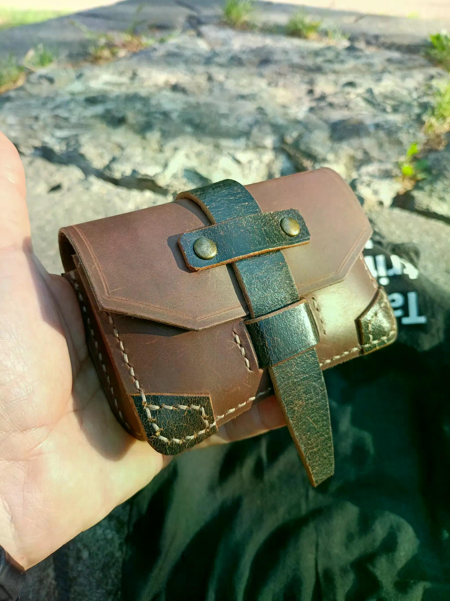

Handmade Brown Leather Belt Pouch, EDC Carry-All
A handmade leather belt pouch designed to organize coins, cards and small everyday essentials in a compact EDC accessory.
Price: $59 USD
Buy on EtsyInternational customers are responsible for any customs duties, import taxes, VAT, brokerage fees, or other charges imposed by their country's customs authorities unless duties and taxes are explicitly stated as prepaid (DDP). Shipping Policy
Handmade Leather EDC
Keep everyday essentials together with this handmade brown leather belt pouch. Designed as a compact EDC carry-all, it can hold coins, bank cards, keys, banknotes and other small items while keeping them close at hand.
The pouch is made from high-quality Italian leather and completely hand-stitched with waxed thread. It measures 3.54 inches (90 mm) high, 5.12 inches (130 mm) wide and 1.37 inches (35 mm) deep. The interior can accommodate up to a dozen bank cards along with a certain amount of banknotes.
The pouch fits standard belts up to 1.57 inches wide (up to 40 mm), making it a practical accessory for everyday carry. Its compact size and handmade construction also make it a thoughtful gift for a father, brother or friend.
Product Details
- Material: High-quality Italian leather
- Construction: Completely hand-stitched with waxed thread
- Height: 3.54 inches (90 mm)
- Width: 5.12 inches (130 mm)
- Depth: 1.37 inches (35 mm)
- Capacity: Holds up to a dozen bank cards and a certain amount of banknotes
- Suitable for standard belts up to 1.57 inches wide (up to 40 mm)
- Designed to carry money, bank cards, keys and other small items
Get This Handmade Leather Product
This handmade leather product is available through the LeatherBagsKingdom Etsy shop.
Buy on Etsy